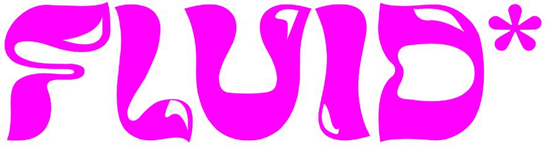
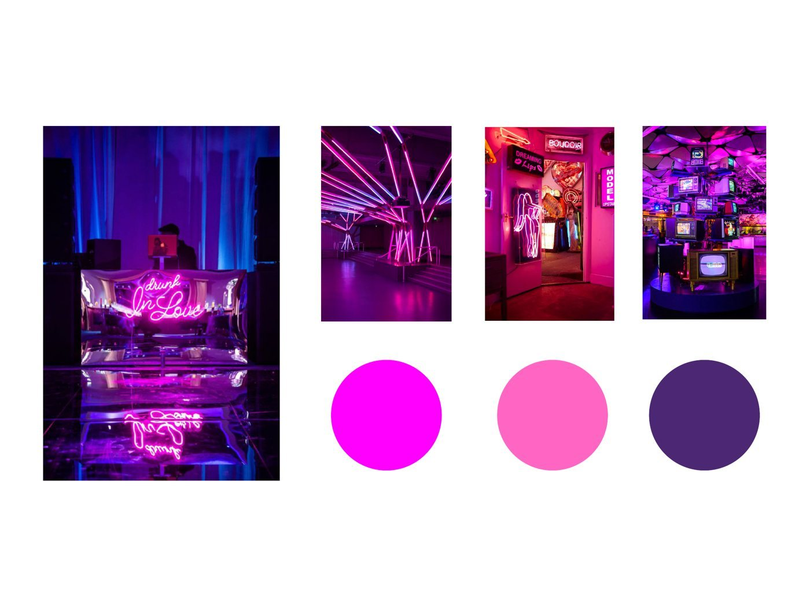
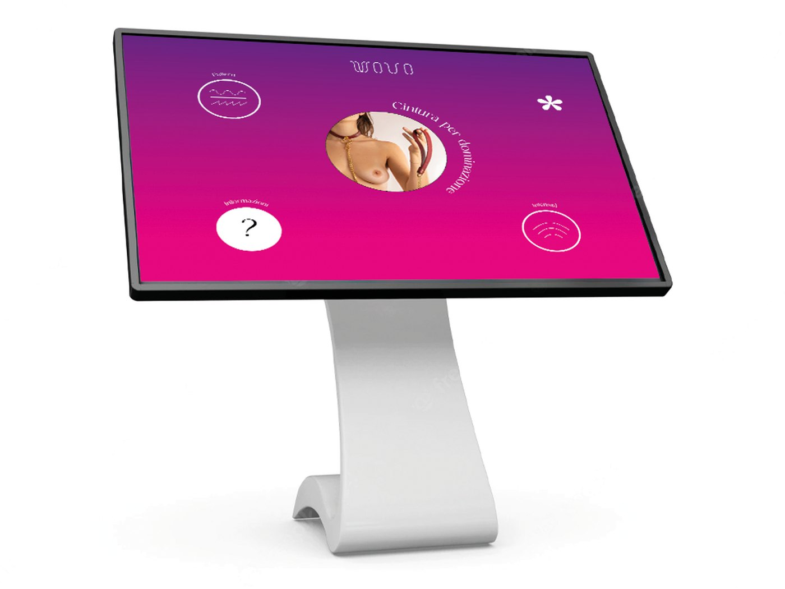
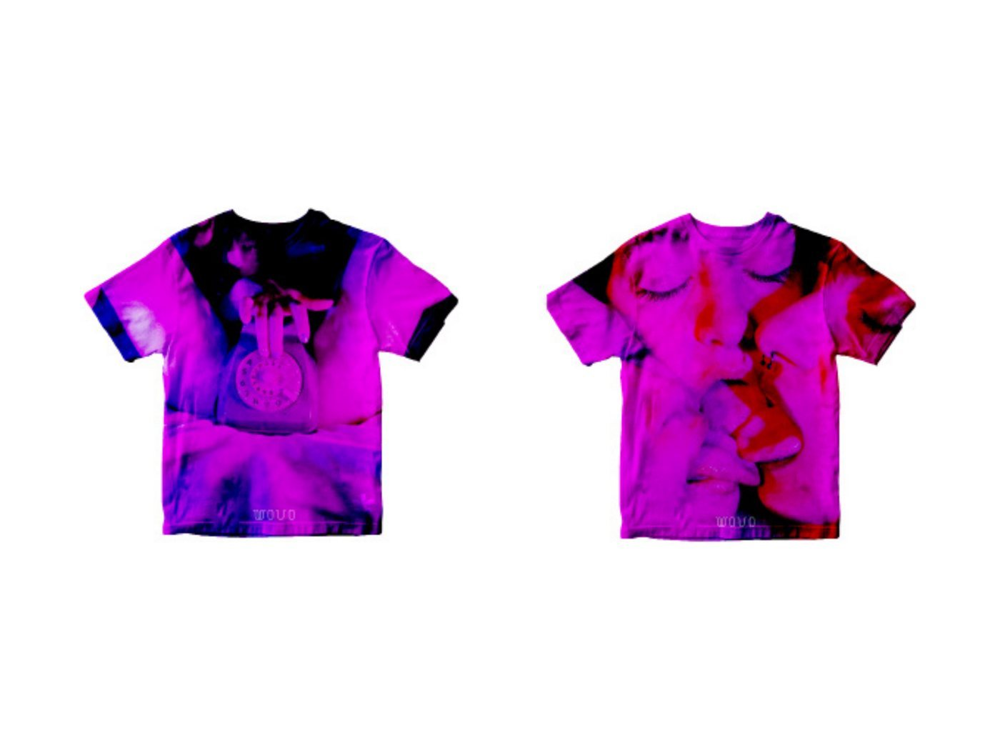
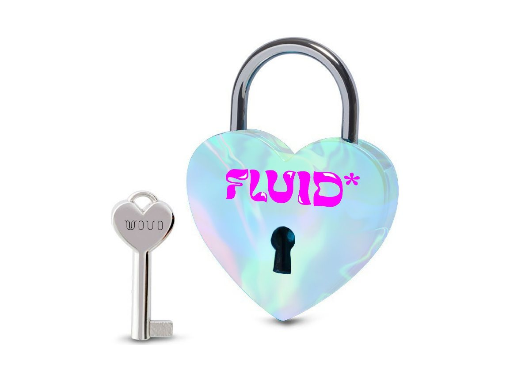
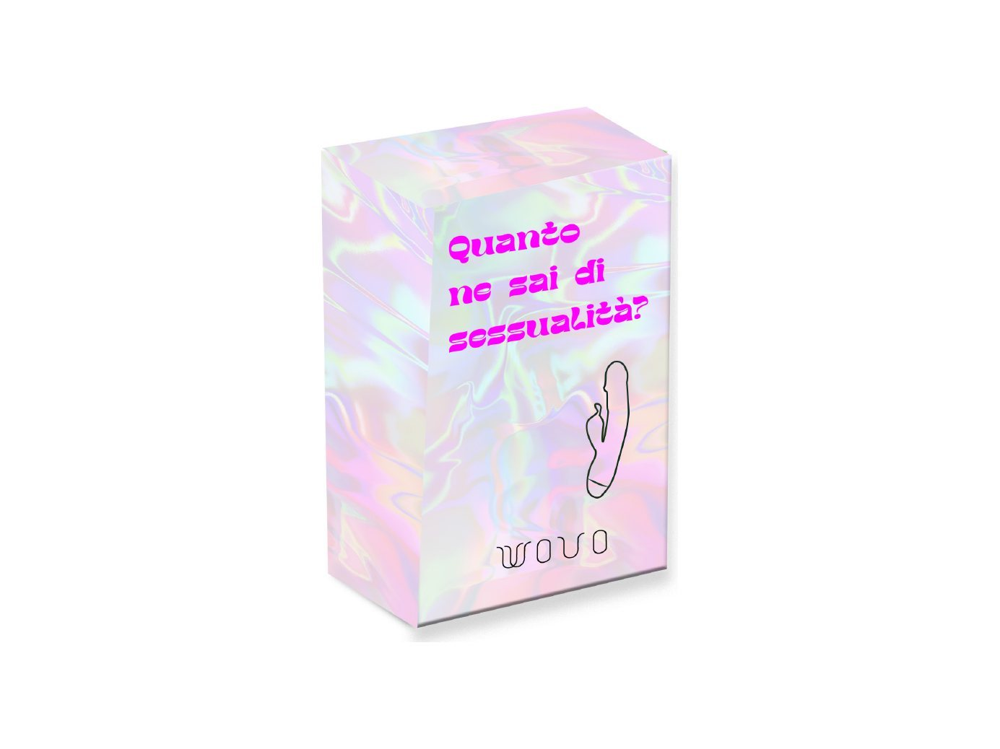
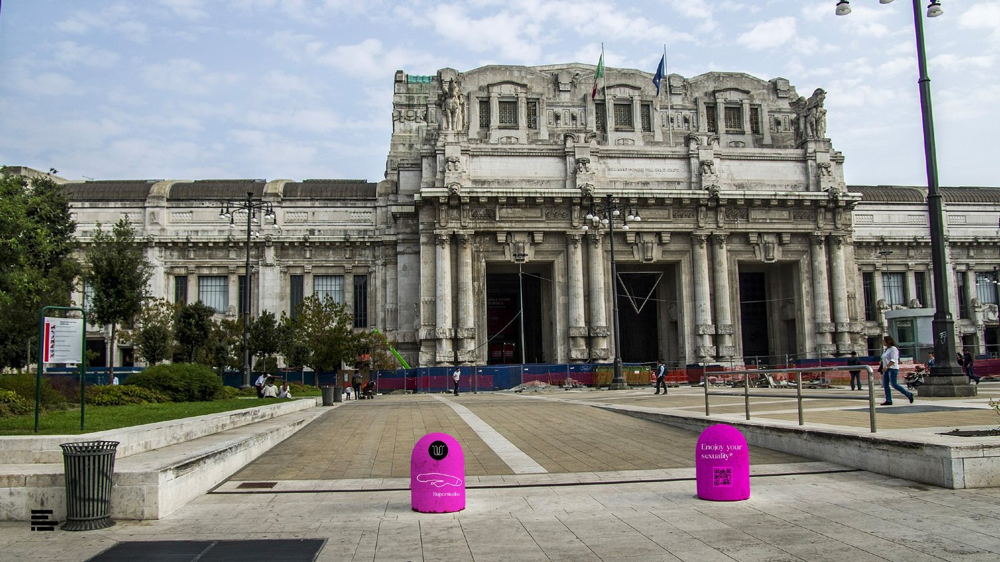

Case study · Tesi di laurea con WOVO
FLUID*

Enjoy your sexuality
Un festival edutainment di un giorno per parlare di sessualità senza tabù: si impara divertendosi. Progettato per WOVO, un concept store che parla apertamente di temi che la società nasconde ancora.
- Ruolo
- Concept, naming, brand identity, event design, comunicazione
- Cliente
- WOVO
- Consegne
- Logo, spazi, programma, pass, gadget, social, sito, ufficio stampa, unconventional

“Quanti di voi parlano spontaneamente coi propri familiari di sex toys?”
- “Dai Virgi, non parliamo di certi argomenti a tavola, stiamo mangiando.”
- “Mio padre esce dalla stanza facendo finta di nulla, quasi inorridito.”
- “L'ultima volta che ho fatto educazione sessuale avevo 13 anni?”
Sessualità e autoerotismo sono temi poco approfonditi e spesso ridicolizzati. Mancano consapevolezza, educazione e un luogo sicuro. FLUID* parte da qui.
01
Lo scenario
Il Covid ha ridotto le occasioni di condividere il piacere dal vivo e ha spinto a sperimentare nuove forme di erotismo: device e sex toys. Ma resta un divario forte.
Il tabù potrebbe cadere definitivamente, con un'educazione adeguata.
02
WOVO e la strategia
WOVO è un concept store all'avanguardia che esplora la sessuologia e sdogana contenuti che la società considera tabù. La sua missione è migliorare il benessere sessuale delle persone; l'evento ha il compito di condividere informazioni.
- FormatoEdutainmentEducare e divertire, coinvolgendo tutti i sensi.
- ObiettiviAwareness, informazione, communityFar conoscere il brand e costruirgli intorno una comunità.
- Target20–35 anniCoppie, single, amici: chiunque sia pronto a esplorare la propria sessualità.
03
Il logo
Un lettering morbido, che sembra sciogliersi, con un asterisco: un segno che rifiuta le etichette e cambia continuamente forma.
- Libertà assoluta
- Senza etichette e schemi
- In costante cambiamento

04
La location
Superstudio Più, Milano: 1.500 mq divisi tra art point, roof, palco per i talk con una videocamera per le dirette social, ed exhibition con schermi touch educativi ed espositori.



05
Il programma
Un pomeriggio e una notte, dall'imparare al festeggiare.
- 15:00–21:00ExhibitionEspositori, schede grafiche e schermi touch che spiegano prodotti e funzionalità.
- 15:00–16:00Workshop“Il corpo come luogo da liberare”, con un'artista multimediale.
- 16:00–18:00Talk “Amati*”Una conduttrice e cinque ospiti su cinque temi: BDSM, baci, legami, orgasmi e sexting. Poi un talk circle con il pubblico.
- 18:00–02:00PartyAperitivo, DJ set e schiuma party per chiudere la serata.
06
La campagna social
Un post per ogni tema dei talk, poi Instagram, Facebook, Tinder e Twitch: i talk vanno in diretta dalla videocamera sul palco per chi non può esserci. E ancora il sito e il video teaser.


07
Pass e gadget
Un'identità iridescente portata su ogni oggetto: pass VIP e organizer, shopper, t-shirt, un lucchetto a cuore e una scatola di carte educative, “Quanto ne sai di sessualità?”.





08
Stampa e unconventional
Un comunicato stampa con QR code per le principali testate milanesi e un percorso unconventional in città che porta, tappa dopo tappa, fino al festival.

Enjoy your sexuality.